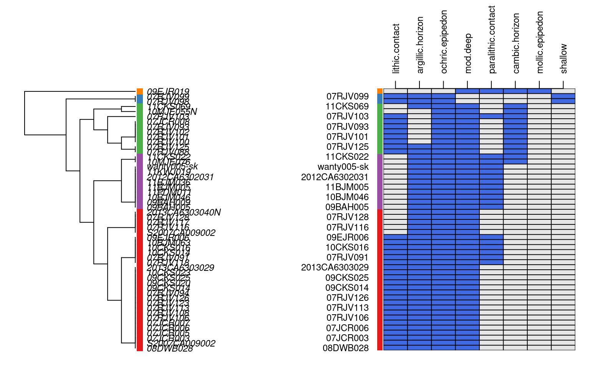
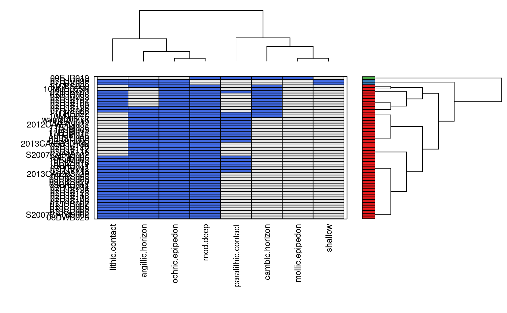

R/diagnosticPropertyPlot.R
diagnosticPropertyPlot.RdGenerate a graphical description of the presence/absence of soil diagnostic properties.
diagnosticPropertyPlot(
f,
v,
k,
grid.label = "pedon_id",
dend.label = "pedon_id",
sort.vars = TRUE
)SoilProfileCollection object
character vector of site-level attribute names of logical type
an integer, number of groups to highlight
the name of a site-level attribute (usually unique) annotating the y-axis of the grid
the name of a site-level attribute (usually unique) annotating dendrogram terminal leaves
sort variables according to natural clustering (TRUE), or use supplied ordering in v
a list is silently returned by this function, containing:
rda data.frame containing IDs and grouping code
profile.ordera vector containing the order of soil profiles (row-order in figure), according to diagnostic property values
var.ordera vector containing the order of variables (column-order in figure), according to their distribution among profiles
This function attempts to display several pieces of information within a single figure. First, soil profiles are sorted according to the presence/absence of diagnostic features named in v. Second, these diagnostic features are sorted according to their distribution among soil profiles. Third, a binary grid is established with row-ordering of profiles based on step 1 and column-ordering based on step 2. Blue cells represent the presence of a diagnostic feature. Soils with similar diagnostic features should 'clump' together. See examples below.
# \donttest{
if(require(aqp) &
require(soilDB) &
require(latticeExtra)
) {
# sample data, an SPC
data(gopheridge, package='soilDB')
# get depth class
sdc <- getSoilDepthClass(gopheridge, name = 'hzname')
site(gopheridge) <- sdc
# diagnostic properties to consider, no need to convert to factors
v <- c('lithic.contact', 'paralithic.contact', 'argillic.horizon',
'cambic.horizon', 'ochric.epipedon', 'mollic.epipedon', 'very.shallow',
'shallow', 'mod.deep', 'deep', 'very.deep')
# base graphics
x <- diagnosticPropertyPlot(gopheridge, v, k=5)
# lattice graphics
x <- diagnosticPropertyPlot2(gopheridge, v, k=3)
# check output
str(x)
}
#> Loading required package: latticeExtra
#> Loading required package: lattice


#> List of 3
#> $ rd :'data.frame': 52 obs. of 3 variables:
#> ..$ peiid : chr [1:52] "1137354" "1147151" "1147190" "242808" ...
#> ..$ pedon_id: chr [1:52] "08DWB028" "07RJV098" "07RJV099" "S2007CA009002" ...
#> ..$ g : int [1:52] 1 2 2 1 1 1 1 1 1 1 ...
#> $ profile.order: int [1:52] 1 4 6 7 8 9 15 16 17 21 ...
#> $ var.order : int [1:8] 1 3 5 8 2 4 6 7
# }